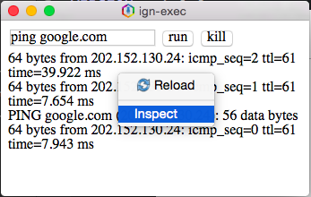

Instalasi IGNSDK
Paket IGN SDK sudah dimasukkan secara default di IGOS Nusantara D9.1. Jika belum terpasang di sistem Anda, ikuti langkah-langkah berikut untuk memasang IGN SDK.
- Buka aplikasi Terminal
- Pasang paket bernama
ignsdk. Paket ini berisi binari peluncur aplikasi yang digunakan untuk menjalankan aplikasi berbasis IGN SDK.
$ sudo yum install ignsdk
- (Opsional) Pasang paket bernama
ignsdk-devtools. Paket ini berisi alat bantu untuk membuat dan memaketkan aplikasi berbasis IGN SDK.
$ sudo yum install ignsdk-devtools
- Testing
ignsdk -p /usr/share/ign-sdk/test/calculator.ign
Membuat Aplikasi di IGNSDK
Skrip IGN SDK Devtools membantu Anda untuk mulai membuat aplikasi berbasis IGN SDK dengan lebih mudah. Selain itu, skrip ini dapat memaketkan aplikasi buatan Anda kedalam bentuk berkas .deb (Debian, Ubuntu, LinuxMint, dll) serta .rpm (IGOS Nusantara, openSUSE). Sebelum menjalankan panduan ini, pastikan bahwa paket “ignsdk-devtools” sudah terpasang.
- Buka terminal
- Jalankan perintah dengan format
ignsdk-app-creator -p [namapaket]. [namapaket] diisi dengan nama paket aplikasi yang akan Anda buat, hanya boleh berisi huruf kecil, angka, dan simbol – (dash). Pastikan nama paket yang akan Anda buat tidak sama dengan nama paket lain yang sudah ada di repositori (misalnya gimp, apache, mysql, dsb.). Sebagai contoh, nama paketnya adalahaplikasi-keren.
$ ignsdk-app-creator -p aplikasi-keren
- Setelahnya akan muncul isian nama aplikasi. Isikan dengan nama aplikasi yang akan Anda buat. Misalnya “Aplikasi Keren”.
Application name: Aplikasi Keren
- Pada isian kategori, isikan nomor sesuai dengan kategori aplikasi Anda. Misalnya “Aplikasi Keren” adalah aplikasi pemutar musik, isikan dengan nomor 2 (Audio).
Choose one: 2
- Selanjutnya, akan muncul isian versi paket. Isikan dengan 1.0.
Version [1.0]: 1.0
- Untuk isian rilis paket, sesuaikan dengan kode rilis distro yang Anda pakai atau yang akan menjadi target instalasi. Untuk paket yang ditujukan bagi IGOS Nusantara D9.x, isi dengan “ign9”.
Release [1]: ign9
- Pada isian lisensi, isikan dengan kode sesuai lisensi aplikasi Anda. Sebaiknya Anda memahami dengan jelas isi lisensi yang Anda pilih. Default-nya adalah MIT.
License [MIT/BSD/GPL2/GPL3/etc, default=MIT]: MIT
- Isikan URL website aplikasi Anda (tanpa awalan http://) pada isian URL
URL [example.com]: ignsdk.web.id
- Isikan deskripsi singkat aplikasi Anda pada isian Description.
Description: Aplikasi keren untuk memutar musik
- Skrip akan membuat aplikasi baru di direktori /home/user/IGNSDK-APP/aplikasi-keren.ign. Anda bisa menjalankan aplikasi tersebut dengan perintah:
$ ignsdk -p ~/IGNSDK-APP/aplikasi-keren.ign
Debugging
Saat proses development proses debugging ini memiliki peranan sangat penting untuk mengetahui proses yang dilakukan oleh aplikasi ignsdk yang sedang kita jalankan. Di IGNSDK debugging dibagi menjadi dua mode, local dubugging dan remote debugging.
1.1 Local Debugging
Secara default local debugging IGNSDK bisa diaktifkan dengan 2 cara yaitu
- Cara 1 : menambahkan parameter -d saat menjalankan aplikasi IGNSDK
$ ignsdk -d -p ~/IGNSDK-APP/aplikasi-keren.ign
- Cara 2 : Menambahkan object
debugdengan valuetruepada berkasignsdk.json
{
"config" : {
"debug" : true,
"websecurity" : true,
"name" : "Aplikasi Keren"
}
}
1.2 Remote Debugging
Remote debugging memungkinkan kita melakukan debug mode IGNSDK di browser atau device lain. Untuk mengaktifkan remote debugging cukup menambahkan parameter -r <port>.
$ ignsdk -d -r 8080 ~/IGNSDK-APP/aplikasi-keren.ign
Akses debugging mode lewat browser http://ip-target:port contoh http://127.0.0.1:8080
Memaketkan Aplikasi
Aplikasi berbasis IGN SDK dapat didistribusikan dengan berbagai cara. Cara yang paling mudah dan
ringkas adalah dengan memaketkannya dalam bentuk .deb atau .rpm. Skrip yang akan digunakan
untuk memaketkan aplikasi adalah ignsdk-app-builder.
1. Buka Terminal.
2. Jalankan perintah dengan format “ignsdk-app-builder -p [namapaket]”. [namapaket]
adalah nama paket aplikasi yang sudah Anda buat sebelumnya dan ada di direktori
/home/igos/IGNSDK-APP/. Contohnya adalah aplikasi-keren.
$ ignsdk-app-builder -p aplikasi-keren
- Sistem pemaketan akan memulai proses.
- Jika sudah selesai, maka paket berbentuk .rpm dengan nama
aplikasikeren.ign-1.0-ign9.noarch.rpmbisa ditemukan di direktori/home/igos/rpmbuild/RPMS/noarch/. Coba pasang paket tersebut.
$ sudo yum install ~/rpmbuild/RPMS/noarch/aplikasi-keren.ign-1.0-ign9.noarch.rpm
- Setelah paket terpasang, akan muncul item menu bernama Aplikasi Keren. Selanjutnya, aplikasi tersebut bisa dijalankan melalui menu.
Contoh Program
2.1 Spawn API
Javascript :
/*Import Module Sys dari IGNSDK runtime*/
var sys = ign.sys();
$(document).ready(function(){
$('#exec').click(function(){
/*Ambil isian perintah
dari text input id (#) "cmd"*/
var cmd = $('#cmd').val();
/*perintah di kirim ke runtime
IGNSDK untuk di eksekusi*/
sys.exec(cmd);
sys.out.connect(function(out){
/*stdout dari perintah ditulis
kedalam element id=out*/
$('#out').prepend(out+"<br>");
})
});
$('#kill').click(function(){
/*Hentikan proses*/
sys.kill();
});
});HTML :
<body>
<input type="text" value="ping google.com" id="cmd">
<input type="submit" value="exec" id="exec">
<input type="submit" value="kill" id="kill"><br>
<div id="out"></div>
</body>2.2 CRUD
Javascript :
//Import Module yang dibutuhkan
var fs = ign.filesystem();
var sql = ign.sql();
//dama file database
var dbFile = "coba.db";
$(document).ready(function(){
//reference http://goo.gl/E0obMa
//Cek apakah file database sudah di buat
if(fs.info(dbFile).exists){
//jika database sudah di buat, aplikasi akan langsung menjalankan fungsi load()
sql.driver("sqlite", dbFile);
load();
}
else{
//jalankan fungsi setup DB jika database belum dibuat
setupDb();
}
});
function setupDb(){
//connect ke database
sql.driver("sqlite", dbFile);
//buat table user dengan field id,nama, dan umur
sql.query("create table user(id INTEGER PRIMARY KEY AUTOINCREMENT,nama varchar(10), umur smallint)");
}
function add(){
var nama = $("#nama").val();
var umur = $("#umur").val();
//query untuk menambah data ke database
var add = sql.query("insert into user (nama,umur) values ('"+nama+"',"+umur+")");
alert("input berhasil status "+add.status);
}
function load(){
//query untuk mengambil data
var loadData = sql.query("select * from user");
var html="";
/*
struktur data yang di hasilkan oleh query
loadData:{ content:[....], status: true}
*/
loadData.content.forEach(function(data){
html += "Nama : " + data.nama + "<br>";
html += "Umur : " + data.umur + "<br>";
html += "<a href='#' onclick='del("+data.id+")'>Delete</a><hr>";
});
$("#out").html(html);
}
function del(id){
//query untuk menghapus data
var del = sql.query("delete from user where id="+id);
}HTML :
<input type="text" placeholder="Nama" id="nama"><br>
<input type="text" placeholder="Umur" id="umur"><br>
<input type="submit" value="Tambah Data" onclick="add()">
<div id="out"></div>